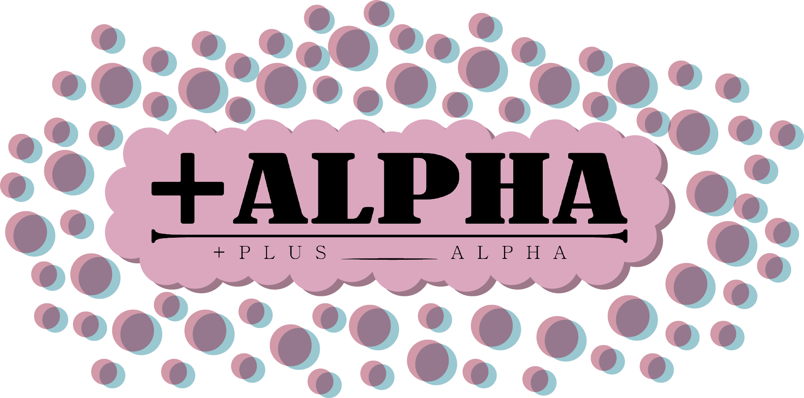

인공지능과 협업하여 창의성의 경계를 넓히는 디자이너의 실험적인 공간입니다.
제가 직접 그린 일러스트와 아이디어들을 AI 기술과 융합하여 정교한 디자인으로 재해석하고 발전시키는 과정을 담았습니다.
단순한 결과물을 넘어, 인간의 영감과 기술적 보완이 만났을 때 탄생하는 새로운 시각적 가능성을 직접 확인해 보세요."이 프로젝트는 인간의 창의적인 영감과 AI의 기술적 조력이 만나 완성되었습니다.
2D 스케치가 3D의 생명력을 얻고, 복잡한 코드가 하나의 인터페이스로 거듭나는 모든 과정에서
AI(Gemini)는 든든한 가이드이자 파트너가 되어주었습니다.
기술과 감각이 교차하는 이 공간은 우리들의 즐거운 협업의 결과물입니다.""종이 위의 선이 디지털 공간의 생명력이 되기까지"
저는 손끝에서 시작된 아날로그 스케치를 AI의 지능과 Blender의 정교함으로 확장하는 작업을 진행했습니다.
AI를 단순한 자동화 도구가 아닌, 상상력의 한계를 넓혀주는 '기술적 파트너'로 활용하며 다크 판타지와 사이파이적 세계관을 3D 공간에 구현합니다.
기술에 매몰되지 않고 인간의 직관으로 알고리즘을 큐레이팅하여, 독창적인 시각적 경험을 빚어내는 과정을 이 포트폴리오에 담았습니다."AI와 인간의 협업으로 재정의하는 3D 디자인 프로세스"
본 포트폴리오는 생성형 AI와 3D 모델링 툴을 결합하여 창작의 효율성과 예술성을 동시에 탐구한 프로젝트들의 기록입니다.
원본 드로잉이 가진 고유한 아이디어를 유지하면서도, AI를 활용해 복잡한 질감과 입체감을 실험하고 Blender를 통해 정밀하게 마감합니다.
도구의 진화 속에서 디자이너가 가져야 할 주체적인 관점과 새로운 창작 문법을 제안합니다.